6 ウル
6/910｜2026/05/09
Y5XF
多了哪些牌
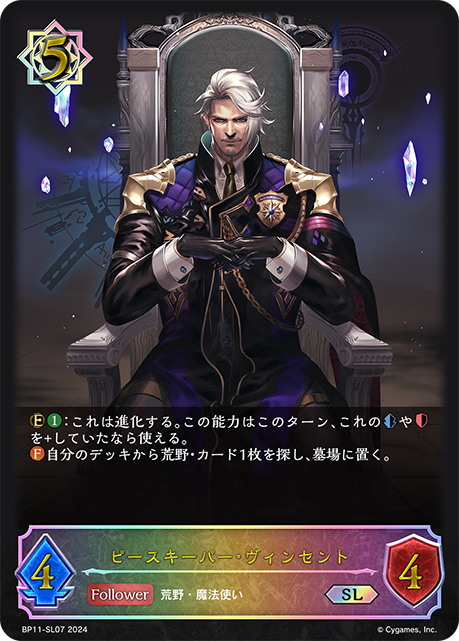
+3 +3
+3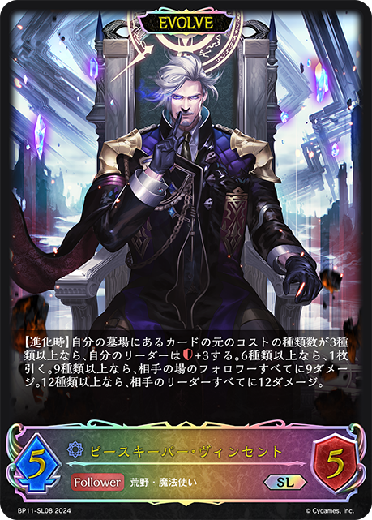
+2 +1
+1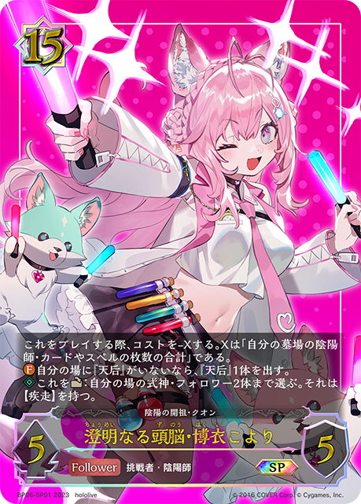
+1 +1
+1 +1
+1 +1
+1 +1
+1少了哪些牌
 -3
-3 -2
-2 -2
-2 -1
-1 -1
-1 -1
-1 -1
-1 -1
-1 -1-1
-1-1 主BP13-040：セレスティアルスフィア・ミリカ主卡组 × 3
主BP13-040：セレスティアルスフィア・ミリカ主卡组 × 3 主BP19-116/PR-527：アズヴォルト主卡组 × 3主BP19-044：撃針の看守主卡组 × 1
主BP19-116/PR-527：アズヴォルト主卡组 × 3主BP19-044：撃針の看守主卡组 × 1 主BP19-046/BP19-P14：熱中の研究者主卡组 × 3
主BP19-046/BP19-P14：熱中の研究者主卡组 × 3 主BP19-048/PR-518：没頭の実験体主卡组 × 3主BP19-115/PR-538：溶鉄の腹心主卡组 × 2
主BP19-048/PR-518：没頭の実験体主卡组 × 3主BP19-115/PR-538：溶鉄の腹心主卡组 × 2 主BP19-042/BP19-P11：忘我の才媛主卡组 × 3主BP19-120：黒錆の下っ端主卡组 × 1
主BP19-042/BP19-P11：忘我の才媛主卡组 × 3主BP19-120：黒錆の下っ端主卡组 × 1 主BP19-038/BP19-SL10：耽溺の咎人・セフィー主卡组 × 3主BP19-045/BP19-P13：異術の看守主卡组 × 3
主BP19-038/BP19-SL10：耽溺の咎人・セフィー主卡组 × 3主BP19-045/BP19-P13：異術の看守主卡组 × 3 主BP19-041/BP19-SL13：弾哭の執行者・キルザエル主卡组 × 3主BP19-113/BP19-P31：輪廻の統治者・ゼラエル主卡组 × 2
主BP19-041/BP19-SL13：弾哭の執行者・キルザエル主卡组 × 3主BP19-113/BP19-P31：輪廻の統治者・ゼラエル主卡组 × 2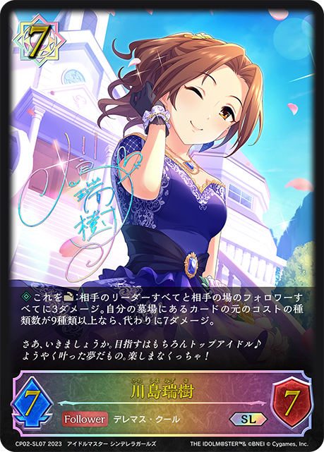
主CP02-035/CP02-SL07：川島瑞樹主卡组 × 1主BP15-056：双刃の魔剣士主卡组 × 2主BP19-119：円環の看守主卡组 × 1主CP01-037/CP01-P28：ナカヤマフェスタ主卡组 × 2 主BP08-037/BP08-SL09/BP08-U03：開闢の予言者主卡组 × 3主BP19-040/BP19-SL12：破式の執行者・シュマエル主卡组 × 1
主BP08-037/BP08-SL09/BP08-U03：開闢の予言者主卡组 × 3主BP19-040/BP19-SL12：破式の執行者・シュマエル主卡组 × 1 进BP13-041：セレスティアルスフィア・ミリカ进化 × 2进BP19-039/BP19-SL11/BP19-U03：耽溺の咎人・セフィー进化 × 3进BP19-043/BP19-P12：忘我の才媛进化 × 3
进BP13-041：セレスティアルスフィア・ミリカ进化 × 2进BP19-039/BP19-SL11/BP19-U03：耽溺の咎人・セフィー进化 × 3进BP19-043/BP19-P12：忘我の才媛进化 × 3 进BP19-047/BP19-P15：熱中の研究者进化 × 2
进BP19-047/BP19-P15：熱中の研究者进化 × 2
+3+3
+2+1
+1+1+1+1+1-3-2-2-1-1-1-1-1-1-1 +3
+3 +3
+3 +1+1+1+1+1-3-2-1-1-1-1-1-1+3
+1+1+1+1+1-3-2-1-1-1-1-1-1+3 +3
+3 +3
+3 +3+3
+3+3 +3
+3 +2
+2 +2
+2 +2+2+1-3-3-3-3-2-2-2-2-1-1-1-1-1-1-1+2
+2+2+1-3-3-3-3-2-2-2-2-1-1-1-1-1-1-1+2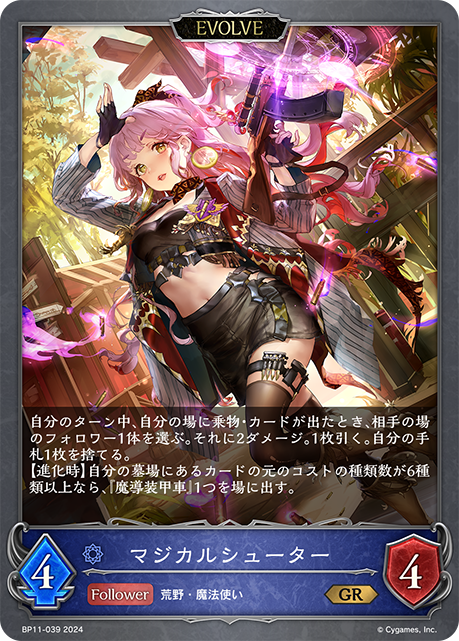
+1+1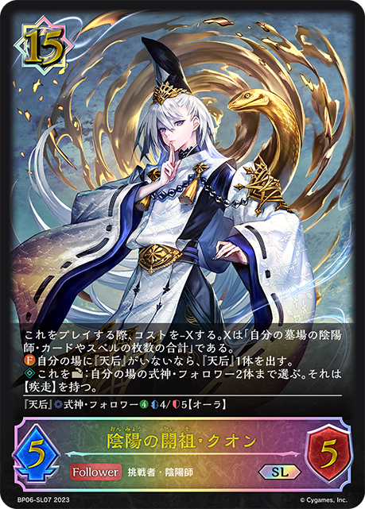
+1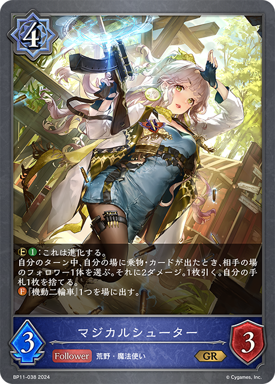
+1+1+1+1-3-2-2-1-1-1-1-1-1-1+3+2+2+1+1-2-1-1-1-1-1-1-1+3+3+2+2+2+2+1+1 +1
+1 +1+1-3-3-3-2-2-2-1-1-1-1+3+2+2+1-2-1-1-1-1-1-1+3
+1+1-3-3-3-2-2-2-1-1-1-1+3+2+2+1-2-1-1-1-1-1-1+3 +3+2+2+2+2+1+1+1-3-2-2-2-1-1-1-1-1-1-1+3+3+3+2+1+1+1+1-3-3-2-2-1-1-1-1-1+2+1+1+1-2-1-1-1+3+2+2+1+1-2-1-1-1-1-1-1-1+3+3+3+2+2+2+2+2+1-3-3-3-2-2-2-2-1-1-1+2+2+1+1+1+1-2-1-1-1-1-1-1+3+3+3+3+2+2+2+1+1-3-3-3-2-2-2-2-1-1-1+3+2+1+1+1+1+1
+3+2+2+2+2+1+1+1-3-2-2-2-1-1-1-1-1-1-1+3+3+3+2+1+1+1+1-3-3-2-2-1-1-1-1-1+2+1+1+1-2-1-1-1+3+2+2+1+1-2-1-1-1-1-1-1-1+3+3+3+2+2+2+2+2+1-3-3-3-2-2-2-2-1-1-1+2+2+1+1+1+1-2-1-1-1-1-1-1+3+3+3+3+2+2+2+1+1-3-3-3-2-2-2-2-1-1-1+3+2+1+1+1+1+1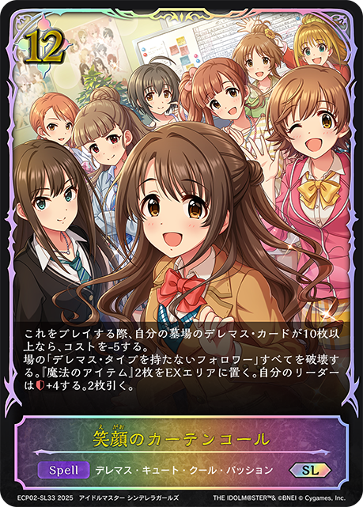
+1-3-2-2-1-1-1-1-1-1-1+3+2+1-1-1-1-1-1-1+3+3+2 +2+2+2+1-3-3-2-2-2-1-1-1+3+2
+2+2+2+1-3-3-2-2-2-1-1-1+3+2 +2
+2 +2+1+1+1+1+1-3-2-2-2-1-1-1-1-1-1-1-1+3+3+2+2+2+2+2+1-3-3-2-2-2-2-1-1-1+3+2+1+1+1+1+1+1-3-2-2-1-1-1-1-1-1-1+3+3+3+3+3+2
+2+1+1+1+1+1-3-2-2-2-1-1-1-1-1-1-1-1+3+3+2+2+2+2+2+1-3-3-2-2-2-2-1-1-1+3+2+1+1+1+1+1+1-3-2-2-1-1-1-1-1-1-1+3+3+3+3+3+2 +2
+2 +2+2+2
+2+2+2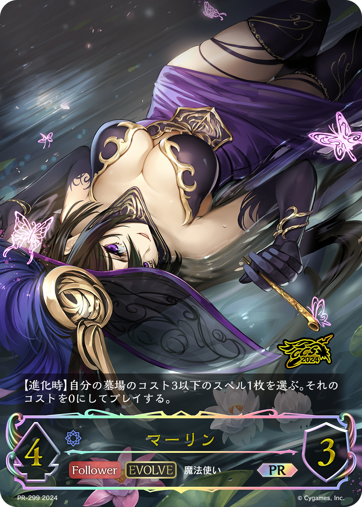
+1+1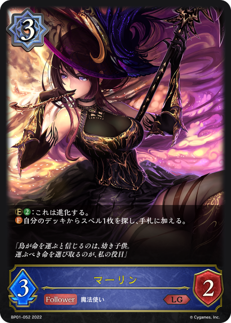
+1+1-3-3-3-3-3-2-2-2-2-1-1-1-1-1-1+3+2+2+1-2-1-1-1-1-1-1+3+2+1+1 +1+1+1+1-3-2-2-1-1-1-1-1-1-1
+1+1+1+1-3-2-2-1-1-1-1-1-1-1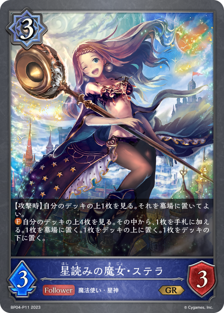
+2+2+1+1+1-2-1-1-1-1+3+3+3+3+3+3+2+2+2+1+1-3-3-3-3-2-2-2-2-1-1-1-1-1-1+3+3+2+2+2+2+2+1-3-3-2-2-2-2-1-1-1 +3
+3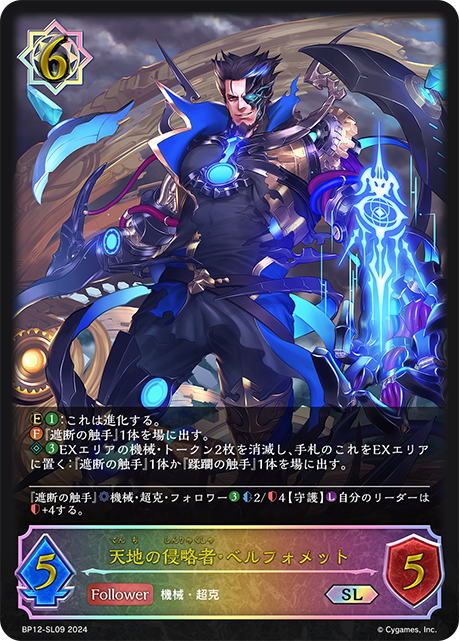
+3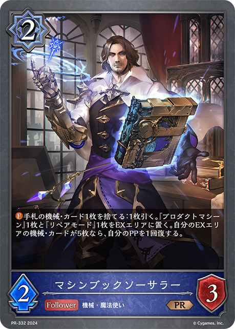
+3+3 +3
+3 +2
+2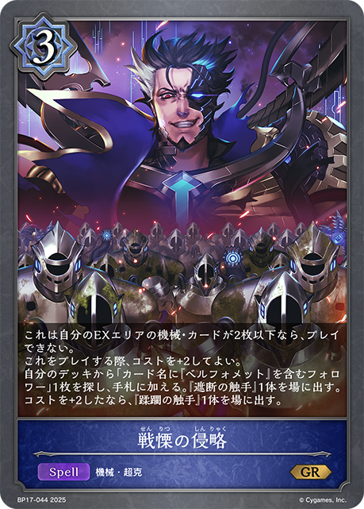
+2+2 +1
+1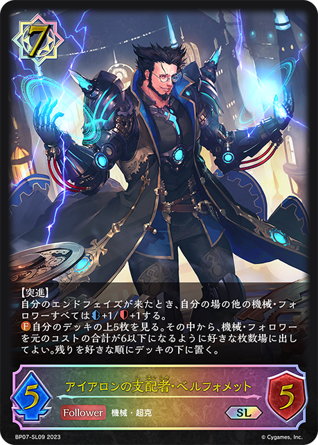
+1-3-3-3-2-2-2-2-1-1-1-1-1-1+3+3+3+3+3+3+2+2+2+2+1-3-3-3-3-2-2-2-2-1-1-1-1-1-1-1+3+3+3+3+3+3+2+2+2+1+1-3-3-3-2-2-2-2-2-2-1-1-1-1-1+3+3+3+3+3+3+2+2+2+1+1-3-3-3-3-2-2-2-2-1-1-1-1-1-1+3+2+1+1+1+1+1+1-3-2-2-1-1-1-1-1-1-1+3+3+3+3+3+3+2+2+1-3-3-3-2-2-2-2-1-1-1-1-1-1+3+3+3+3+3+3+2+2+2+1-3-3-3-2-2-2-2-1-1-1-1-1-1-1-1+3+3+3+3+2+2+2+2+2+1+1-3-3-3-3-2-2-2-2-1-1-1-1+3+3+2+1+1+1-2-2-1-1-1-1-1-1-1+3+2+1+1+1+1+1+1+1-3-2-2-2-1-1-1-1-1-1+3+2+2 +2+1+1-3-2-2-1-1-1-1+3+1+1-2-1-1-1+3+2+1+1+1+1+1-3-2-2-1-1-1-1-1-1+2+2+1
+2+1+1-3-2-2-1-1-1-1+3+1+1-2-1-1-1+3+2+1+1+1+1+1-3-2-2-1-1-1-1-1-1+2+2+1 +1+1+1+1+1-2-2-2-1-1-1-1-1-1-1-1-1+3+2+1+1+1+1+1+1-3-2-2-1-1-1-1-1-1-1+3+2+1+1+1+1+1+1-3-2-2-1-1-1-1-1-1-1+2+1+1+1+1-2-1-1-1-1+2+1+1+1-2-1-1-1+3+2+2+2+1+1-2-1-1-1-1-1-1-1-1-1+2+2+1+1-2-1-1-1-1+3+3+3+3+1+1+1+1+1-3-3-2-2-2-1-1-1-1-1+3+3+3+3+3+3+2+2+2+1+1-3-3-3-3-2-2-2-2-2-1-1-1-1+3+2+1+1+1+1+1+1-3-2-2-1-1-1-1-1-1-1+3+2+1+1+1+1+1-2-2-1-1-1-1-1-1-1-1-1+3+2+1+1+1+1+1-3-2-1-1-1-1-1-1-1-1+3+3+2+2+2+2+2+1-3-3-2-2-2-2-1-1-1+3+2+1+1+1+1+1+1-3-2-2-1-1-1-1-1-1-1+2+2+2+1+1-2-1-1-1-1-1-1+3+2+1+1+1+1+1-3-2-2-1-1-1-1-1-1+3+2+1+1+1+1+1+1+1-3-2-2-1-1-1-1-1-1-1-1+2+2+1+1+1+1-2-1-1-1-1-1-1+3+2+1+1+1+1+1+1-3-2-2-1-1-1-1-1-1-1+3+2+1+1+1+1+1+1+1+1-3-2-2-2-1-1-1-1-1-1-1+3+3+3+2+2+2+2+2+1-3-3-3-2-2-2-2-1-1-1+3+2+1+1+1+1+1+1-3-2-2-1-1-1-1-1-1-1+3+2+1+1+1+1+1+1+1-2-2-2-2-1-1-1-1-1-1-1+3+2+1+1+1+1+1+1-3-2-2-1-1-1-1-1-1-1+2+2+1+1-2-1-1-1-1+3+3+3+2+1+1+1+1+1-3-3-2-2-1-1-1-1-1-1+2+1+1+1-2-1-1-1+3+3
+1+1+1+1+1-2-2-2-1-1-1-1-1-1-1-1-1+3+2+1+1+1+1+1+1-3-2-2-1-1-1-1-1-1-1+3+2+1+1+1+1+1+1-3-2-2-1-1-1-1-1-1-1+2+1+1+1+1-2-1-1-1-1+2+1+1+1-2-1-1-1+3+2+2+2+1+1-2-1-1-1-1-1-1-1-1-1+2+2+1+1-2-1-1-1-1+3+3+3+3+1+1+1+1+1-3-3-2-2-2-1-1-1-1-1+3+3+3+3+3+3+2+2+2+1+1-3-3-3-3-2-2-2-2-2-1-1-1-1+3+2+1+1+1+1+1+1-3-2-2-1-1-1-1-1-1-1+3+2+1+1+1+1+1-2-2-1-1-1-1-1-1-1-1-1+3+2+1+1+1+1+1-3-2-1-1-1-1-1-1-1-1+3+3+2+2+2+2+2+1-3-3-2-2-2-2-1-1-1+3+2+1+1+1+1+1+1-3-2-2-1-1-1-1-1-1-1+2+2+2+1+1-2-1-1-1-1-1-1+3+2+1+1+1+1+1-3-2-2-1-1-1-1-1-1+3+2+1+1+1+1+1+1+1-3-2-2-1-1-1-1-1-1-1-1+2+2+1+1+1+1-2-1-1-1-1-1-1+3+2+1+1+1+1+1+1-3-2-2-1-1-1-1-1-1-1+3+2+1+1+1+1+1+1+1+1-3-2-2-2-1-1-1-1-1-1-1+3+3+3+2+2+2+2+2+1-3-3-3-2-2-2-2-1-1-1+3+2+1+1+1+1+1+1-3-2-2-1-1-1-1-1-1-1+3+2+1+1+1+1+1+1+1-2-2-2-2-1-1-1-1-1-1-1+3+2+1+1+1+1+1+1-3-2-2-1-1-1-1-1-1-1+2+2+1+1-2-1-1-1-1+3+3+3+2+1+1+1+1+1-3-3-2-2-1-1-1-1-1-1+2+1+1+1-2-1-1-1+3+3 +3+3+3+3
+3+3+3+3 +3+2+1
+3+2+1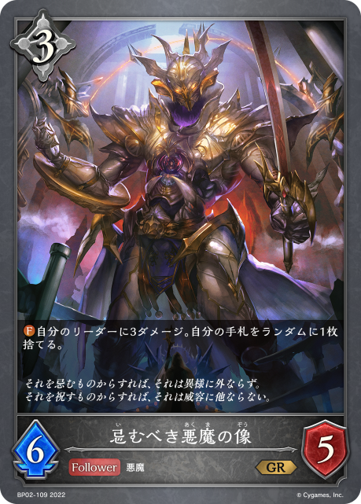
+1+1-3-3-3-2-2-2-2-2-1-1-1-1-1-1-1+3+1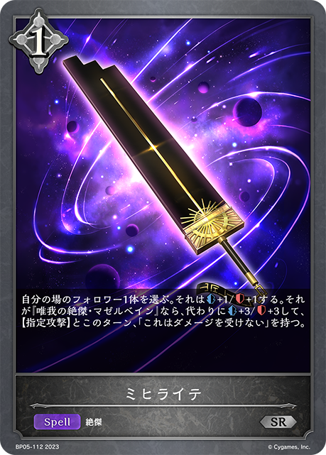
+1+1+1+1+1-3-2-2-1-1-1-1-1-1-1-1+3+2+1+1+1+1+1+1+1-2-2-2-2-1-1-1-1-1-1-1+3+3+3+3+3+3+3+2+2+1-3-3-3-2-2-2-2-1-1-1-1-1-1-1-1+3+2+1+1+1+1+1-3-2-2-1-1-1-1-1-1+3+2+2+1+1+1+1-3-2-2-1-1-1-1-1-1-1+3+2+1+1+1+1+1-2-2-2-1-1-1-1-1-1-1+3+3+3+3+3+3+2+2+2+2+1-3-3-3-3-2-2-2-2-1-1-1-1-1-1-1+3+3+3+2+2+2+2+2+1+1-3-3-3-2-2-2-2-1-1-1-1+3+3+3+3+3+2+2+2+1+1+1-3-3-3-3-2-2-2-2-1-1-1-1 +3
+3 +3
+3 +3
+3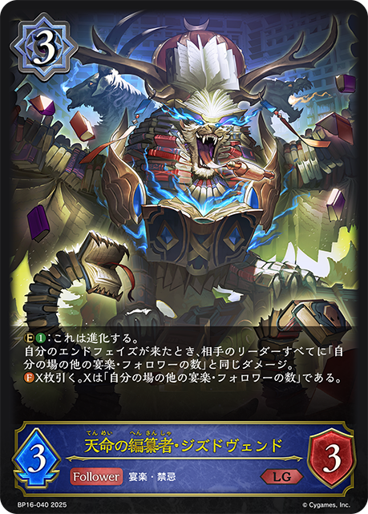
+3 +2+2
+2+2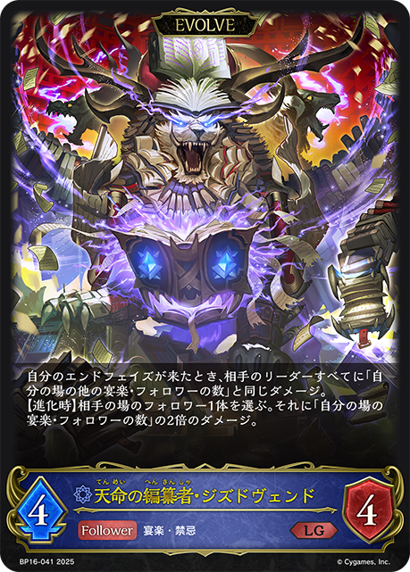
+1+1 +1+1+1-3-3-2-2-2-2-2-1-1-1-1-1+3+3+3+3+3+3+2+2+2+2+1-3-3-3-3-2-2-2-2-1-1-1-1-1-1-1+2+2+2+1+1+1+1+1-3-2-2-2-1-1+3+3+3+2+2+1+1+1+1-3-3-3-2-2-2-2-1-1-1-1-1-1+3+3+3+3+3+3+2+2+2+2+1-3-3-3-3-2-2-2-2-1-1-1-1-1-1-1+3+3+3+2+2+2+2+2+1-3-3-3-2-2-2-2-1-1-1
+1+1+1-3-3-2-2-2-2-2-1-1-1-1-1+3+3+3+3+3+3+2+2+2+2+1-3-3-3-3-2-2-2-2-1-1-1-1-1-1-1+2+2+2+1+1+1+1+1-3-2-2-2-1-1+3+3+3+2+2+1+1+1+1-3-3-3-2-2-2-2-1-1-1-1-1-1+3+3+3+3+3+3+2+2+2+2+1-3-3-3-3-2-2-2-2-1-1-1-1-1-1-1+3+3+3+2+2+2+2+2+1-3-3-3-2-2-2-2-1-1-1 +3+3+2+2+2+2+2+1-3-3-2-2-2-2-1-1-1+3+2+2+2+1+1+1+1+1
+3+3+2+2+2+2+2+1-3-3-2-2-2-2-1-1-1+3+2+2+2+1+1+1+1+1 +1+1+1-3-3-2-2-2-1-1-1-1-1-1-1-1+3+3+3+3+2+2+2+1+1+1+1-3-3-3-2-2-2-2-1-1-1-1-1+3+3+3+3+2+2+2+1-3-3-3-2-2-2-2-1-1+3+3+3+2+2+2+1+1+1+1-3-3-2-2-2-2-1-1-1-1-1
+1+1+1-3-3-2-2-2-1-1-1-1-1-1-1-1+3+3+3+3+2+2+2+1+1+1+1-3-3-3-2-2-2-2-1-1-1-1-1+3+3+3+3+2+2+2+1-3-3-3-2-2-2-2-1-1+3+3+3+2+2+2+1+1+1+1-3-3-2-2-2-2-1-1-1-1-1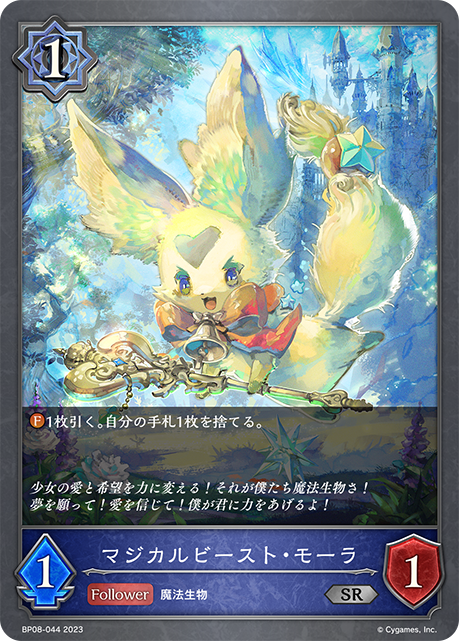
+3+2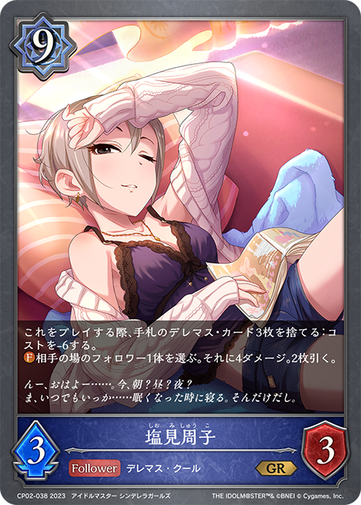
+2 +1+1+1-2-2-2-1-1-1-1+3+2+1+1+1+1+1+1+1-3-2-2-2-1-1-1-1-1-1+2+2+1+1+1+1-3-2-2-1-1-1-1-1-1+3+2+2+1-2-1-1-1-1-1-1+3+3+3+2+2+1+1-3-3-2-2-1-1-1-1-1+3+3+3+3+3+3+2+2+1-3-3-3-2-2-2-2-1-1-1-1-1-1+3+2+1+1+1+1+1-2-2-2-1-1-1-1-1-1-1
+1+1+1-2-2-2-1-1-1-1+3+2+1+1+1+1+1+1+1-3-2-2-2-1-1-1-1-1-1+2+2+1+1+1+1-3-2-2-1-1-1-1-1-1+3+2+2+1-2-1-1-1-1-1-1+3+3+3+2+2+1+1-3-3-2-2-1-1-1-1-1+3+3+3+3+3+3+2+2+1-3-3-3-2-2-2-2-1-1-1-1-1-1+3+2+1+1+1+1+1-2-2-2-1-1-1-1-1-1-1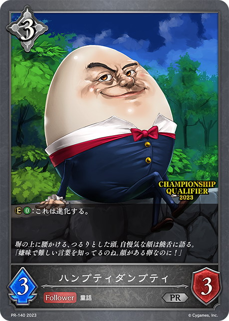
+3 +2+1+1-1-1-1-1-1-1-1
+2+1+1-1-1-1-1-1-1-1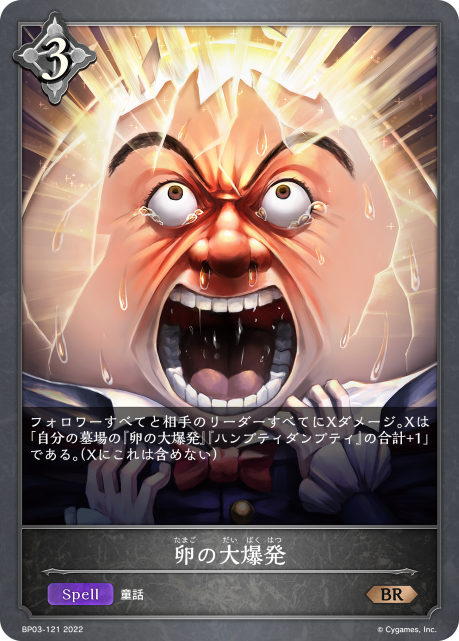
+3+3+3+3+3+2+2+1+1+1-3-3-3-2-2-2-2-2-1-1-1-1-1-1+2+1+1-2-1-1+3+2+1+1+1+1+1+1-2-2-2-2-1-1-1-1-1-1+3+2+2+2+2+2+1+1-3-3-2-2-2-1-1-1+2+1+1+1+1-1-1-1-1-1-1+3+2+2+1-2-1-1-1-1-1-1+3+3 +3+3+3
+3+3+3 +2+2+2
+2+2+2 +2+2
+2+2 +1+1+1+1-3-3-3-3-3-2-2-2-2-1-1-1-1-1-1+3+3+2+2+2+2+2+1-3-3-2-2-2-2-1-1-1+3+2+2+1-2-1-1-1-1-1-1+3+3+3+2+2+2+1-3-2-2-2-2-2-1-1-1+2+1+1+1+1-2-1-1-1-1+3+2+2+2+1+1+1+1+1+1+1-3-3-2-2-2-1-1-1-1-1-1-1+3+3+3+2+2+2+2+1+1-3-3-3-2-2-2-2-1-1+3+2+2+1+1+1+1+1+1-3-2-2-2-1-1-1-1-1-1-1+3+3+2+2+2+2+1+1+1+1+1-3-3-3-2-2-2-1-1-1-1+3+3+3+3+3+2+2+2+1+1-3-3-3-2-2-2-2-1-1-1-1-1-1+2+2+1+1+1-2-1-1-1-1-1+3+2+1+1+1+1+1+1-3-2-2-1-1-1-1-1-1-1
+1+1+1+1-3-3-3-3-3-2-2-2-2-1-1-1-1-1-1+3+3+2+2+2+2+2+1-3-3-2-2-2-2-1-1-1+3+2+2+1-2-1-1-1-1-1-1+3+3+3+2+2+2+1-3-2-2-2-2-2-1-1-1+2+1+1+1+1-2-1-1-1-1+3+2+2+2+1+1+1+1+1+1+1-3-3-2-2-2-1-1-1-1-1-1-1+3+3+3+2+2+2+2+1+1-3-3-3-2-2-2-2-1-1+3+2+2+1+1+1+1+1+1-3-2-2-2-1-1-1-1-1-1-1+3+3+2+2+2+2+1+1+1+1+1-3-3-3-2-2-2-1-1-1-1+3+3+3+3+3+2+2+2+1+1-3-3-3-2-2-2-2-1-1-1-1-1-1+2+2+1+1+1-2-1-1-1-1-1+3+2+1+1+1+1+1+1-3-2-2-1-1-1-1-1-1-1 +3+3+2+2+2
+3+3+2+2+2 +1+1+1+1-3-3-2-2-2-2-1-1-1-1-1+3+3+3+3+2+2+2+1-3-3-3-2-2-2-2-1-1+3+2+1+1+1+1+1+1-3-2-2-1-1-1-1-1-1-1+3+3+3+2+2+2+2+2+1-3-3-3-2-2-2-2-1-1-1+3+2+1+1+1+1+1+1+1+1-3-2-2-2-1-1-1-1-1-1-1+3+2+2+1+1+1-3-2-1-1-1-1-1-1-1-1+3+3+3+2+2+2+2+2+1-3-3-3-2-2-2-2-1-1-1+3+2+1+1+1+1+1+1-3-2-2-1-1-1-1-1-1-1+3+2+1+1+1+1+1+1-3-2-2-1-1-1-1-1-1-1+3+3+3+3+3+2+2+2+1+1+1-3-3-3-3-2-2-2-2-1-1-1-1+3+2+1+1+1+1+1+1-3-2-2-1-1-1-1-1-1-1+3+3+3+2+2+2+2+2+1+1-3-3-3-2-2-2-2-1-1-1-1+3+2+1+1+1+1+1+1-3-2-2-2-1-1-1-1-1-1-1-1+3+3+2+1+1+1+1-3-2-2-2-1-1-1+3+2+1+1+1+1+1+1-3-2-2-1-1-1-1-1-1-1+3+3+3+3+3+2+2+2+1-3-3-3-2-2-2-2-2-1-1-1+3+3+3+3+3+2+2+2+2+1+1+1-3-3-3-3-2-2-2-2-1-1-1-1-1-1+3+3+3+3+3+3+2+2+2+2+1-3-3-3-3-2-2-2-2-1-1-1-1-1-1-1+2+1+1+1+1-2-1-1-1-1+3+3+3+3+3+3+2+2+2+2+1-3-3-3-3-2-2-2-2-1-1-1-1-1-1-1+3+2+1+1+1+1+1+1-3-2-2-1-1-1-1-1-1-1+3+3+3+2+1+1+1-3-2-1-1-1-1-1-1-1-1-1+3+3+3+1+1+1+1-3-2-2-1-1-1-1-1-1+3+2+2+1+1+1+1+1-3-2-2-1-1-1-1-1-1-1-1+3+2+1+1+1+1+1+1-3-2-2-1-1-1-1-1-1-1+3+2+1+1+1+1+1-2-2-2-1-1-1-1-1-1-1+3+2+2
+1+1+1+1-3-3-2-2-2-2-1-1-1-1-1+3+3+3+3+2+2+2+1-3-3-3-2-2-2-2-1-1+3+2+1+1+1+1+1+1-3-2-2-1-1-1-1-1-1-1+3+3+3+2+2+2+2+2+1-3-3-3-2-2-2-2-1-1-1+3+2+1+1+1+1+1+1+1+1-3-2-2-2-1-1-1-1-1-1-1+3+2+2+1+1+1-3-2-1-1-1-1-1-1-1-1+3+3+3+2+2+2+2+2+1-3-3-3-2-2-2-2-1-1-1+3+2+1+1+1+1+1+1-3-2-2-1-1-1-1-1-1-1+3+2+1+1+1+1+1+1-3-2-2-1-1-1-1-1-1-1+3+3+3+3+3+2+2+2+1+1+1-3-3-3-3-2-2-2-2-1-1-1-1+3+2+1+1+1+1+1+1-3-2-2-1-1-1-1-1-1-1+3+3+3+2+2+2+2+2+1+1-3-3-3-2-2-2-2-1-1-1-1+3+2+1+1+1+1+1+1-3-2-2-2-1-1-1-1-1-1-1-1+3+3+2+1+1+1+1-3-2-2-2-1-1-1+3+2+1+1+1+1+1+1-3-2-2-1-1-1-1-1-1-1+3+3+3+3+3+2+2+2+1-3-3-3-2-2-2-2-2-1-1-1+3+3+3+3+3+2+2+2+2+1+1+1-3-3-3-3-2-2-2-2-1-1-1-1-1-1+3+3+3+3+3+3+2+2+2+2+1-3-3-3-3-2-2-2-2-1-1-1-1-1-1-1+2+1+1+1+1-2-1-1-1-1+3+3+3+3+3+3+2+2+2+2+1-3-3-3-3-2-2-2-2-1-1-1-1-1-1-1+3+2+1+1+1+1+1+1-3-2-2-1-1-1-1-1-1-1+3+3+3+2+1+1+1-3-2-1-1-1-1-1-1-1-1-1+3+3+3+1+1+1+1-3-2-2-1-1-1-1-1-1+3+2+2+1+1+1+1+1-3-2-2-1-1-1-1-1-1-1-1+3+2+1+1+1+1+1+1-3-2-2-1-1-1-1-1-1-1+3+2+1+1+1+1+1-2-2-2-1-1-1-1-1-1-1+3+2+2 +2+2+1+1+1+1+1-3-3-2-2-2-1-1-1-1-1-1-1+3+2+2+2+2
+2+2+1+1+1+1+1-3-3-2-2-2-1-1-1-1-1-1-1+3+2+2+2+2 +2+2+2+2
+2+2+2+2 +1+1-3-3-3-2-2-2-2-1-1-1-1+3+3+3+2+1+1+1+1-3-3-2-2-1-1-1-1-1+3+3+2+2+2+2+2+1-3-3-2-2-2-2-1-1-1+3+3+3+3+2+1+1+1+1-3-3-2-2-2-2-1-1-1-1+3+3+2+2+2+1+1+1-3-3-2-2-2-2-1-1-1-1+3+2+1+1+1+1+1-3-2-1-1-1-1-1-1-1-1+2+2+1+1+1-2-1-1-1-1-1+3+3+3+3+3+2+2+2+2+1+1+1+1-3-3-3-3-2-2-2-2-1-1-1-1-1-1-1+3+2+2+2+1+1+1+1+1+1-3-2-2-2-1-1-1-1-1-1-1-1-1+3+3+2+2+2+1+1+1-3-3-2-2-1-1-1-1-1+3+2+1+1+1+1+1+1-3-2-2-1-1-1-1-1-1-1+3+3+3+3+2+2+2+1+1+1+1-3-3-3-2-2-2-2-1-1-1-1-1+3+3+2+2+2+2+2+1-3-3-2-2-2-2-1-1-1+3+3+3+3+3+2+2+2+1+1+1-3-3-3-3-2-2-2-2-1-1-1-1+3+2+1+1+1+1+1+1-3-2-2-1-1-1-1-1-1-1+3+3+3+3+3+3+2+2+2+2+1-3-3-3-3-2-2-2-2-1-1-1-1-1-1-1+3+3+3+3+3+3+2+2+2+1+1-3-3-3-3-2-2-2-2-1-1-1-1-1-1+3+3+3+3+3+3+2+2+2+1+1-3-3-3-3-2-2-2-2-1-1-1-1-1-1+3+2+1+1+1+1+1-3-2-2-1-1-1-1-1-1+3+3+2+2+2+2+2+1+1-3-3-2-2-2-2-1-1-1-1+3+3+2+2+2+2+2+1-3-3-2-2-2-2-1-1-1+3+2+2+2+2+1+1+1+1+1-3-3-2-2-2-1-1-1-1-1-1-1+3+3+3+3+2+2+2+1-3-3-3-2-2-2-2-1-1+2+2+2+1+1+1+1-2-1-1-1-1-1-1-1-1+3+2+1+1+1+1+1+1+1+1-2-2-2-2-1-1-1-1-1-1-1-1+3+3+3+3+3+2+2+2+2+2+1+1+1+1-3-3-3-3-3-2-2-2-2-1-1-1-1-1-1+3+2+1+1+1+1+1-3-2-2-1-1-1-1-1-1+3+2+2+2+1+1-2-2-1-1-1-1-1-1-1+3+3+3+3+3+2+2+2+2+2+1+1+1+1-3-3-3-3-3-2-2-2-2-1-1-1-1-1-1+3
+1+1-3-3-3-2-2-2-2-1-1-1-1+3+3+3+2+1+1+1+1-3-3-2-2-1-1-1-1-1+3+3+2+2+2+2+2+1-3-3-2-2-2-2-1-1-1+3+3+3+3+2+1+1+1+1-3-3-2-2-2-2-1-1-1-1+3+3+2+2+2+1+1+1-3-3-2-2-2-2-1-1-1-1+3+2+1+1+1+1+1-3-2-1-1-1-1-1-1-1-1+2+2+1+1+1-2-1-1-1-1-1+3+3+3+3+3+2+2+2+2+1+1+1+1-3-3-3-3-2-2-2-2-1-1-1-1-1-1-1+3+2+2+2+1+1+1+1+1+1-3-2-2-2-1-1-1-1-1-1-1-1-1+3+3+2+2+2+1+1+1-3-3-2-2-1-1-1-1-1+3+2+1+1+1+1+1+1-3-2-2-1-1-1-1-1-1-1+3+3+3+3+2+2+2+1+1+1+1-3-3-3-2-2-2-2-1-1-1-1-1+3+3+2+2+2+2+2+1-3-3-2-2-2-2-1-1-1+3+3+3+3+3+2+2+2+1+1+1-3-3-3-3-2-2-2-2-1-1-1-1+3+2+1+1+1+1+1+1-3-2-2-1-1-1-1-1-1-1+3+3+3+3+3+3+2+2+2+2+1-3-3-3-3-2-2-2-2-1-1-1-1-1-1-1+3+3+3+3+3+3+2+2+2+1+1-3-3-3-3-2-2-2-2-1-1-1-1-1-1+3+3+3+3+3+3+2+2+2+1+1-3-3-3-3-2-2-2-2-1-1-1-1-1-1+3+2+1+1+1+1+1-3-2-2-1-1-1-1-1-1+3+3+2+2+2+2+2+1+1-3-3-2-2-2-2-1-1-1-1+3+3+2+2+2+2+2+1-3-3-2-2-2-2-1-1-1+3+2+2+2+2+1+1+1+1+1-3-3-2-2-2-1-1-1-1-1-1-1+3+3+3+3+2+2+2+1-3-3-3-2-2-2-2-1-1+2+2+2+1+1+1+1-2-1-1-1-1-1-1-1-1+3+2+1+1+1+1+1+1+1+1-2-2-2-2-1-1-1-1-1-1-1-1+3+3+3+3+3+2+2+2+2+2+1+1+1+1-3-3-3-3-3-2-2-2-2-1-1-1-1-1-1+3+2+1+1+1+1+1-3-2-2-1-1-1-1-1-1+3+2+2+2+1+1-2-2-1-1-1-1-1-1-1+3+3+3+3+3+2+2+2+2+2+1+1+1+1-3-3-3-3-3-2-2-2-2-1-1-1-1-1-1+3 +3+3+3+3+2
+3+3+3+3+2 +2+2+1-3-3-3-3-2-2-2-2-1-1-1-1-1+3+2+2+1+1+1+1+1+1+1-3-2-2-2-1-1-1-1-1-1-1-1+3+3+3+3+3+2+2+2+2+1+1+1-3-3-3-3-2-2-2-2-1-1-1-1-1-1+3+3+3+3+3+3+2+2+2+2+1-3-3-3-3-2-2-2-2-1-1-1-1-1-1-1+3+2+1+1+1+1+1+1+1-3-2-2-1-1-1-1-1-1-1-1+2+2+2+1+1+1+1+1-3-2-2-2-1-1+3+3+3+3+3+2+2+2+2+2+1+1+1+1-3-3-3-3-3-2-2-2-2-1-1-1-1-1-1+3+3+3+3+2+2+2+1+1+1-3-3-3-2-2-2-2-1-1-1-1+3+3+3+3+3+3+2+2+1+1+1+1-3-3-3-3-2-2-2-2-1-1-1-1-1-1+3+3+3+3+2+2+2+1+1-3-3-3-2-2-2-2-1-1-1+3+3+3+3+2+2+2+2+1+1-3-3-3-2-2-2-2-1-1-1-1-1+3+2+2+1+1+1+1+1+1+1-3-2-2-2-1-1-1-1-1-1-1-1+3+3+3+3+3+2+2+2+2+1+1-3-3-3-3-2-2-2-2-1-1-1-1-1+3+3+3+3+3+3+2+2+2+2+1-3-3-3-3-2-2-2-2-1-1-1-1-1-1-1+2+1-2-1+3+3+3+2+2+2+2+1+1-3-3-3-2-2-2-1-1-1-1+3+2+2+2+1+1+1+1+1+1+1-3-3-2-2-2-1-1-1-1-1-1-1
+2+2+1-3-3-3-3-2-2-2-2-1-1-1-1-1+3+2+2+1+1+1+1+1+1+1-3-2-2-2-1-1-1-1-1-1-1-1+3+3+3+3+3+2+2+2+2+1+1+1-3-3-3-3-2-2-2-2-1-1-1-1-1-1+3+3+3+3+3+3+2+2+2+2+1-3-3-3-3-2-2-2-2-1-1-1-1-1-1-1+3+2+1+1+1+1+1+1+1-3-2-2-1-1-1-1-1-1-1-1+2+2+2+1+1+1+1+1-3-2-2-2-1-1+3+3+3+3+3+2+2+2+2+2+1+1+1+1-3-3-3-3-3-2-2-2-2-1-1-1-1-1-1+3+3+3+3+2+2+2+1+1+1-3-3-3-2-2-2-2-1-1-1-1+3+3+3+3+3+3+2+2+1+1+1+1-3-3-3-3-2-2-2-2-1-1-1-1-1-1+3+3+3+3+2+2+2+1+1-3-3-3-2-2-2-2-1-1-1+3+3+3+3+2+2+2+2+1+1-3-3-3-2-2-2-2-1-1-1-1-1+3+2+2+1+1+1+1+1+1+1-3-2-2-2-1-1-1-1-1-1-1-1+3+3+3+3+3+2+2+2+2+1+1-3-3-3-3-2-2-2-2-1-1-1-1-1+3+3+3+3+3+3+2+2+2+2+1-3-3-3-3-2-2-2-2-1-1-1-1-1-1-1+2+1-2-1+3+3+3+2+2+2+2+1+1-3-3-3-2-2-2-1-1-1-1+3+2+2+2+1+1+1+1+1+1+1-3-3-2-2-2-1-1-1-1-1-1-1| 图片 | 平均张数 | 使用率 | 0张比例 | 1张比例 | 2张比例 | 3张比例 |
|---|---|---|---|---|---|---|
|
3.00 | 100.0% | 0.0% | 0.0% | 0.0% | 100.0% |
|
3.00 | 100.0% | 0.0% | 0.0% | 0.0% | 100.0% |
|
3.00 | 100.0% | 0.0% | 0.0% | 0.0% | 100.0% |
|
3.00 | 100.0% | 0.0% | 0.0% | 0.0% | 100.0% |
|
2.58 | 89.8% | 10.2% | 1.6% | 8.6% | 79.7% |
|
2.09 | 84.0% | 16.0% | 0.5% | 41.7% | 41.7% |
|
2.11 | 83.4% | 16.6% | 8.6% | 22.5% | 52.4% |
|
2.01 | 68.4% | 31.6% | 1.1% | 2.1% | 65.2% |
|
1.11 | 56.7% | 43.3% | 9.1% | 40.6% | 7.0% |
|
1.32 | 54.0% | 46.0% | 11.2% | 7.5% | 35.3% |
|
1.50 | 53.5% | 46.5% | 0.5% | 9.6% | 43.3% |
|
1.33 | 52.9% | 47.1% | 1.6% | 23.0% | 28.3% |
|
1.08 | 39.6% | 60.4% | 0.5% | 9.6% | 29.4% |
|
0.79 | 39.0% | 61.0% | 5.3% | 27.8% | 5.9% |
|
0.38 | 36.4% | 63.6% | 34.8% | 1.6% | 0.0% |
| 0.99 | 33.2% | 66.8% | 0.0% | 0.0% | 33.2% | |
|
0.98 | 33.2% | 66.8% | 0.0% | 1.1% | 32.1% |
|
0.98 | 33.2% | 66.8% | 0.0% | 1.1% | 32.1% |
|
0.33 | 33.2% | 66.8% | 33.2% | 0.0% | 0.0% |
|
0.90 | 32.6% | 67.4% | 1.6% | 4.3% | 26.7% |
| 0.52 | 31.6% | 68.4% | 16.6% | 9.6% | 5.3% | |
|
0.78 | 31.0% | 69.0% | 3.7% | 7.5% | 19.8% |
|
0.64 | 28.3% | 71.7% | 7.0% | 7.0% | 14.4% |
| 0.28 | 27.8% | 72.2% | 27.8% | 0.0% | 0.0% | |
|
0.50 | 23.5% | 76.5% | 4.3% | 11.8% | 7.5% |
| 0.22 | 20.3% | 79.7% | 18.2% | 2.1% | 0.0% | |
|
0.55 | 18.2% | 81.8% | 0.0% | 0.0% | 18.2% |
|
0.55 | 18.2% | 81.8% | 0.0% | 0.0% | 18.2% |
|
0.54 | 18.2% | 81.8% | 0.0% | 0.5% | 17.6% |
|
0.47 | 17.6% | 82.4% | 1.1% | 3.7% | 12.8% |
| 0.18 | 17.6% | 82.4% | 17.6% | 0.0% | 0.0% | |
|
0.15 | 15.0% | 85.0% | 15.0% | 0.0% | 0.0% |
|
0.24 | 11.8% | 88.2% | 3.7% | 4.3% | 3.7% |
|
0.25 | 10.7% | 89.3% | 1.6% | 4.3% | 4.8% |
|
0.20 | 9.6% | 90.4% | 1.1% | 7.0% | 1.6% |
|
0.08 | 7.5% | 92.5% | 7.0% | 0.5% | 0.0% |
|
0.13 | 7.0% | 93.0% | 2.1% | 3.7% | 1.1% |
|
0.15 | 5.9% | 94.1% | 0.0% | 2.7% | 3.2% |
|
0.12 | 5.9% | 94.1% | 0.0% | 5.3% | 0.5% |
|
0.07 | 5.9% | 94.1% | 4.8% | 0.5% | 0.5% |
| 0.05 | 5.3% | 94.7% | 5.3% | 0.0% | 0.0% | |
| 0.08 | 2.7% | 97.3% | 0.0% | 0.0% | 2.7% | |
|
0.06 | 2.1% | 97.9% | 0.0% | 0.5% | 1.6% |
|
0.04 | 2.1% | 97.9% | 0.0% | 2.1% | 0.0% |
| 0.02 | 2.1% | 97.9% | 2.1% | 0.0% | 0.0% | |
| 0.05 | 1.6% | 98.4% | 0.0% | 0.0% | 1.6% | |
| 0.05 | 1.6% | 98.4% | 0.0% | 0.0% | 1.6% | |
|
0.05 | 1.6% | 98.4% | 0.0% | 0.0% | 1.6% |
|
0.05 | 1.6% | 98.4% | 0.0% | 0.0% | 1.6% |
| 0.05 | 1.6% | 98.4% | 0.0% | 0.0% | 1.6% | |
|
0.05 | 1.6% | 98.4% | 0.0% | 0.0% | 1.6% |
| 0.04 | 1.6% | 98.4% | 0.0% | 1.1% | 0.5% | |
|
0.03 | 1.1% | 98.9% | 0.0% | 0.0% | 1.1% |
|
0.03 | 1.1% | 98.9% | 0.0% | 0.0% | 1.1% |
|
0.03 | 1.1% | 98.9% | 0.0% | 0.0% | 1.1% |
|
0.02 | 1.1% | 98.9% | 0.0% | 1.1% | 0.0% |
|
0.01 | 1.1% | 98.9% | 1.1% | 0.0% | 0.0% |
| 0.01 | 1.1% | 98.9% | 1.1% | 0.0% | 0.0% | |
|
0.01 | 1.1% | 98.9% | 1.1% | 0.0% | 0.0% |
| 0.02 | 0.5% | 99.5% | 0.0% | 0.0% | 0.5% | |
| 0.02 | 0.5% | 99.5% | 0.0% | 0.0% | 0.5% | |
|
0.02 | 0.5% | 99.5% | 0.0% | 0.0% | 0.5% |
|
0.02 | 0.5% | 99.5% | 0.0% | 0.0% | 0.5% |
|
0.02 | 0.5% | 99.5% | 0.0% | 0.0% | 0.5% |
|
0.02 | 0.5% | 99.5% | 0.0% | 0.0% | 0.5% |
|
0.01 | 0.5% | 99.5% | 0.0% | 0.5% | 0.0% |
| 0.01 | 0.5% | 99.5% | 0.0% | 0.5% | 0.0% | |
|
0.01 | 0.5% | 99.5% | 0.0% | 0.5% | 0.0% |
|
0.01 | 0.5% | 99.5% | 0.0% | 0.5% | 0.0% |
|
0.01 | 0.5% | 99.5% | 0.0% | 0.5% | 0.0% |
|
0.01 | 0.5% | 99.5% | 0.0% | 0.5% | 0.0% |
| 0.01 | 0.5% | 99.5% | 0.0% | 0.5% | 0.0% | |
| 0.01 | 0.5% | 99.5% | 0.5% | 0.0% | 0.0% | |
| 0.01 | 0.5% | 99.5% | 0.5% | 0.0% | 0.0% | |
|
0.01 | 0.5% | 99.5% | 0.5% | 0.0% | 0.0% |
| 图片 | 平均张数 | 使用率 | 0张比例 | 1张比例 | 2张比例 | 3张比例 |
|---|---|---|---|---|---|---|
|
2.40 | 99.5% | 0.5% | 0.0% | 58.8% | 40.6% |
|
2.29 | 99.5% | 0.5% | 2.7% | 63.6% | 33.2% |
|
2.00 | 99.5% | 0.5% | 1.6% | 95.2% | 2.7% |
|
0.93 | 52.4% | 47.6% | 12.3% | 40.1% | 0.0% |
|
0.81 | 39.6% | 60.4% | 1.6% | 34.8% | 3.2% |
| 0.67 | 33.2% | 66.8% | 0.0% | 32.1% | 1.1% | |
|
0.36 | 18.2% | 81.8% | 0.5% | 17.6% | 0.0% |
|
0.18 | 17.6% | 82.4% | 17.6% | 0.0% | 0.0% |
|
0.10 | 5.9% | 94.1% | 2.1% | 3.7% | 0.0% |
| 0.04 | 3.7% | 96.3% | 3.7% | 0.0% | 0.0% | |
|
0.05 | 2.7% | 97.3% | 0.5% | 2.1% | 0.0% |
| 0.03 | 2.7% | 97.3% | 2.7% | 0.0% | 0.0% | |
|
0.03 | 1.6% | 98.4% | 0.0% | 1.6% | 0.0% |
| 0.03 | 1.6% | 98.4% | 0.5% | 1.1% | 0.0% | |
|
0.02 | 1.6% | 98.4% | 1.6% | 0.0% | 0.0% |
|
0.02 | 1.1% | 98.9% | 0.0% | 1.1% | 0.0% |
|
0.01 | 1.1% | 98.9% | 1.1% | 0.0% | 0.0% |
|
0.01 | 0.5% | 99.5% | 0.0% | 0.5% | 0.0% |
|
0.01 | 0.5% | 99.5% | 0.5% | 0.0% | 0.0% |
|
0.01 | 0.5% | 99.5% | 0.5% | 0.0% | 0.0% |